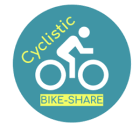
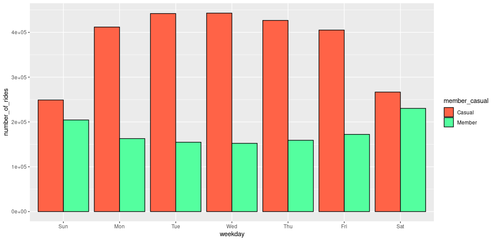
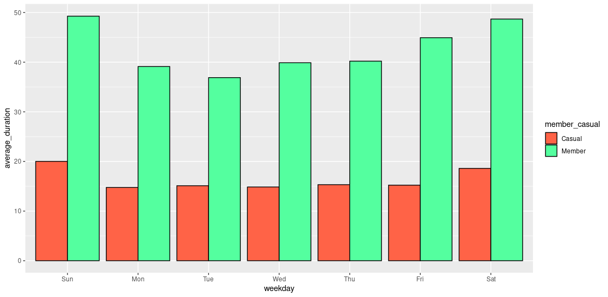
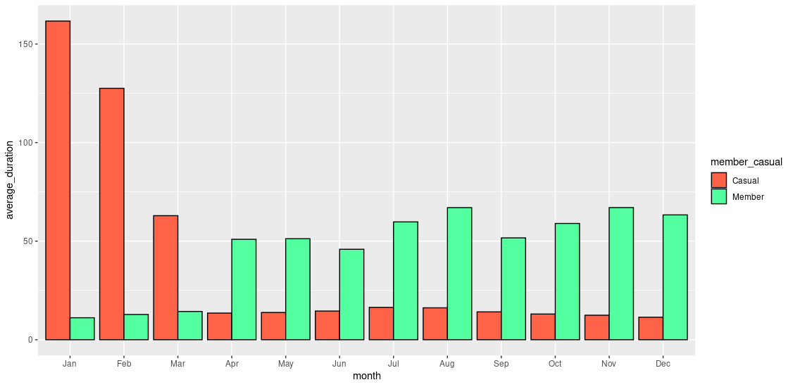

Introduction
In this case study provided by the Data Analysis program developed by Google.
My role as a junior data analyst is to help Cyclistic, the company I work for, make better business decisions based on my analysis.
In this scenario, the CEO of Cyclistic believes that the future of the company depends on increasing the number of annual members.
Therefore, me and my team need to understand how annual members and casual riders use our bicycles.
From these insights, we hope to come up with marketing strategies that will increase the number of annual members.
My main task is to analyse Cyclistic datasets to identify how annual and casual members ride, and how their riding patterns defer.
On the other hand, our time frame for this analysis is the last twelve months.
These results will help my team create a marketing strategy that would increase the number of annual members.
Data Description
I decided to use the R coding language in Rstudio to perform my analysis. Because, it would be easier to manage, given that the datasets were quite large.
The data was spread across different datasets with inconsistent naming conventions.
This prompted me to choose the naming conventions used in the first quarter of 2020, because it was the latest method used by the company.
Click here to get the original datasets.
Data Cleaning Process
After thoroughly examining my datasets, and establishing proper naming convection. The next step is cleaning and ensuring the integrity of my data
Click here
to open a new tab showing my cleaning process using R.
Analysis & Data Visualization
Number of rides taken by casual and members throughout the year

-Based on the number of rides taken by casual and members throughout the year. Casual riders activity increases from March to December.
Number of rides taken by casual and members during weekdays

-Casual riders are more active during business days.
Average duration by week day

-Member's average duration reach its peak during weekends.
Average duration throughout the year

-Casual average duration peaks between the months of January to March.
Key Takeaways
Number of rides Weekly
Throughout weekdays, casual and annual members maintain a relatively constant number of rides per day. Meanwhile, during weekends.
Number of rides Monthly
When compared, casuals and annual member’s number of rides both seem to increase from early Spring to mid Fall. Reaching their highest number of rides in August.
Average Duration, Weekly
Throughout weekdays, annual members average duration surpasses casual members by a large margin. And reaches its highest value during the weekends.
Average Duration, Monthly
From January to April, Casual’s average duration decreases drastically. But it is still greater than members.
Meanwhile, throughout the rest of the year annual member’s average duration surpasses casuals and maintains an increasing average duration rate.
Marketing Strategies & Suggestions
After a detailed analysis, manipulation, and exploration of the datasets provided in this case study, I have come up with the following suggestions;
- Increase the budget of marketing strategies between the months of January to March. With the main focus of appealing to our casual riders. For example,
by offering lower admission feed for new members by 30%.
- Offer special promotions for future members. For example, if they share the initial promotion they will get some sort of reward as a complementary such as stickers and a 15% of their
following month.
- Increase the budget of marketing strategies between the months of April to December. For example,
by offering lower admission feed for new members by 20-15%.
- Offer special promotion packeges weekly, targeting casual riders between April and November.